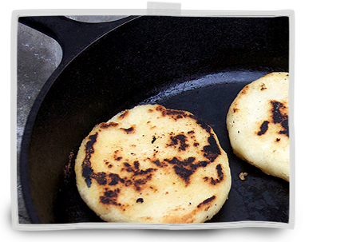

Homemade Venezuelan Food
Venezuelan cooking is an expression of the mixture of indigenous ingredients and the conquests, which makes our cooking varied, tasty, and with a flavour that pleases the most exquisite palates.
Our speciality are the arepas!
cornmeal patties that are eaten in place of bread in Venezuela, and can be filled with various accompaniments such as: beef, pulled pork, beans, cheese, avocado.. you name it!
Gallery
We are a Venezuelan family who moved to the UK in 2011, and ever since have yearned to share the gastronomic delights of our homeland with the British people.
